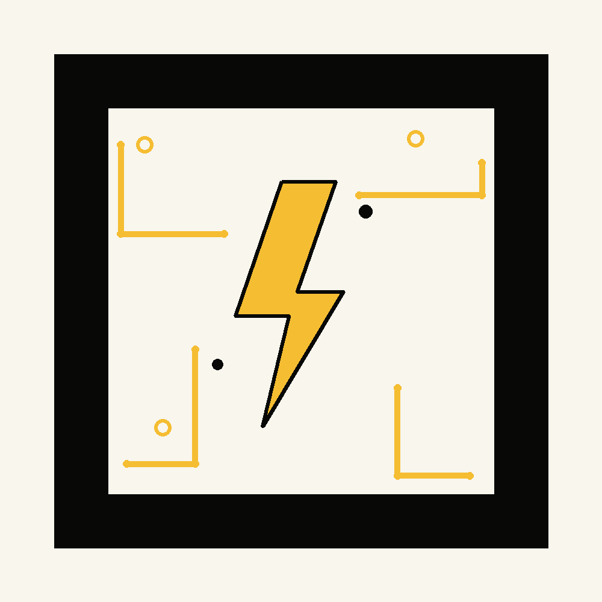

Activate AR ⚡
Circuit AR
Badge Scanner
Point your camera at the Circuit AR Badge printed on the back of any Amit Ke Circuits coaster to bring it to life.
- 1. Tap "Activate Circuit AR" and allow camera access.
- 2. Point your phone at the printed Circuit AR Badge, 20–40cm away.
- 3. Watch the Amit Ke Circuits reveal appear on top of the badge.
No printed badge handy? Open the microsite instead →
Experimental Feature
Circuit AR is
charging up.
Camera ya AR load nahi hua? Koi tension nahi. Amit Ke Circuits microsite yahin se open karo.
Open Microsite